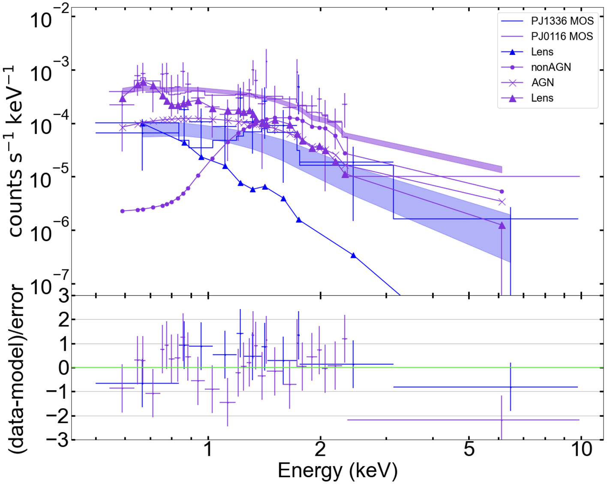
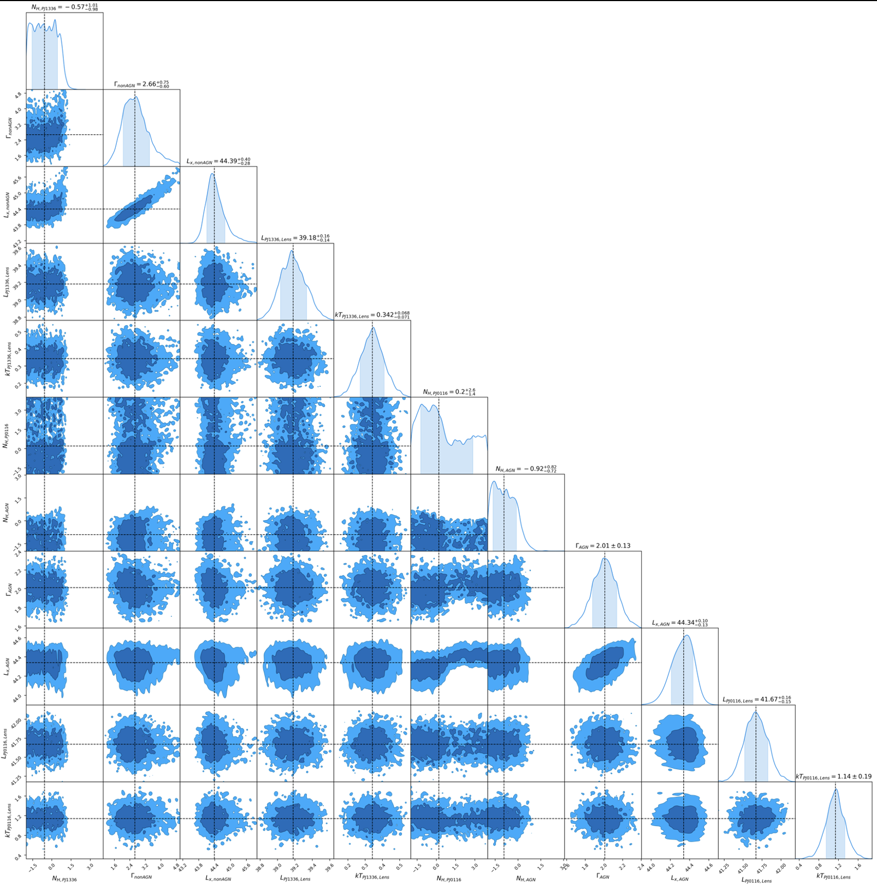

Advisors: Dr. Min Yun and Dr. Daniel Wang
Dusty Star Forming Galaxies
X-Ray Luminosity and Star Formation Rate
Galaxies emit light accross entire light spectrum. This allows us to study the Star Formation Rate (SFR) using many wavelengths. I study the relation of the X-Ray luminosity, light that is mostly dominated by Active Galactic Nuclei (AGN) and High Mass X-Ray Binaries (HMXBs), and the SFR derived from infrared light. Because the population size of HMXBs are directly the SFR of a galaxy, this relation should allow astronomers to either observe the infrared light or X-Ray light and measure the SFR of a galaxy. However, there are still many uncertainties as to what extactly the X-Ray luminosity measures.
X-Ray Spectra
Although the X-ray luminosity-SFR relation has been studied using observations of local galaxies (redshifts, z, < 1; Mineo et al. 2014), X-ray observations at high redshift (z > 2) have previously not been observed. Thanks to the help of nature's telescope, graviational lensing, we can observe X-ray emission from high redshift sources. This plot is an X-Ray spectra of a joint fit of two of our sources, PJ0116 and PJ1336, obtained from the XMM-Newton MOS instrument. Using this spectra we can measure the hydrogen column densities, the photon index, and the luminosity of each source. To preform these calculations, I use Monte Carlo Markov Chain (MCMC) analysis to find the most likely values based on our data (results seen in corner plot below). Using local calibrations of nearby galaxies from Mineo et al. 2014, we expect that the Lx/SFR ratio should equal (4.0 ± 0.4) x 1039 erg/s. However, currently we are obtaining higher values than expected with values of ≈ 13 x 1039 erg/s. We are still in the process of reducing our data, but the results are promising. Stay tooned for future publications
